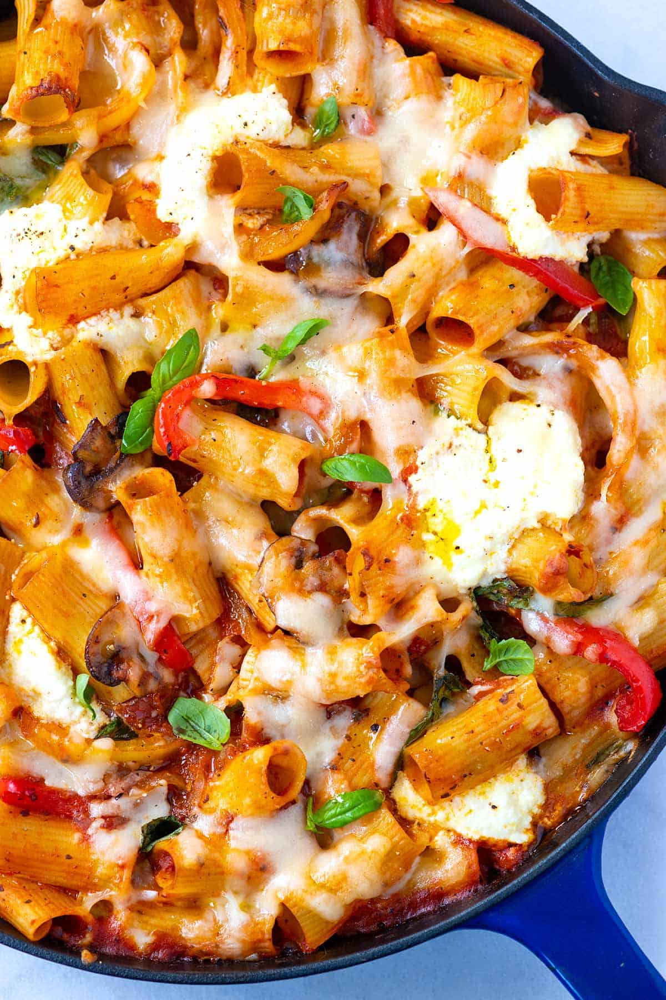

Vegetable Baked Pasta

Easy Vegetable Baked Pasta
A few years ago, we shared our recipe for vegetable lasagna.
So many of you have commented about how much you love the recipe,
we set out to create another veggie based pasta, but one that doesnt require nearly as much time to make.
I still LOVE that lasagna, but when Im short on time, this cheesy baked pasta is where I turn.
Since we are on the subject of pasta recipes, you might want to take a look at our recipe for veggie spaghetti.
Ingredients
- Pasta of choice
- Vegetables (onion, bell peppers, mushrooms, etc.)
- Marinara sauce
- Fennel and fresh basil
- A simple addition of spice and fresh herbs are what makes this pasta taste homemade and fresh.
- Ricotta and mozzarella cheese
Steps
- Heat the oven to 350 degrees Fahrenheit. If you have an oven-safe 12-inch deep skillet, you can cook the veggies and bake the pasta in it. If you do not, prepare a 3-quart baking dish by lightly greasing with olive oil.
- Bring a large pot of salted water to a boil, and then cook the pasta. Check the package for cook time, but cook the pasta two minutes less than what is recommend on the box (it will continue to cook in the oven). Before draining the pasta, reserve 1/2 cup of the pasta water.
- While the pasta cooks, prepare the vegetables. Slice the onions and bell peppers into 1/4-inch thick slices.
- Using a damp paper towel, brush all dirt from mushrooms. Cut away and discard any hard stems. Chop into 1/4-inch slices or, if there are larger mushrooms like portobello, cut into 1/4-inch cubes.
- Heat a wide skillet over medium-high heat. Add the oil then add the mushrooms, in one layer, and cook until browned on one side, 3 to 5 minutes. Stir then add the onions and peppers. Cook another 3 to 5 minutes or until the veggies are starting to soften and have some browned edges. Season to taste with salt and black pepper (I usually add 1/4 teaspoon of each).
- Stir the fennel, marinara sauce, and basil into the vegetables. If your skillet is large enough, toss in the pasta and if the mixture seems dry, add a splash of the reserved pasta water. If the skillet is too small, combine the sauce and pasta in a bowl. Adjust with pasta water, and then add to a baking dish.
- Taste the pasta and adjust with more salt and pepper. Tuck spoonfuls of ricotta around the pasta, and then top with the mozzarella cheese. Bake the pasta, uncovered, until the cheese melts and is bubbling, 20 to 25 minutes.